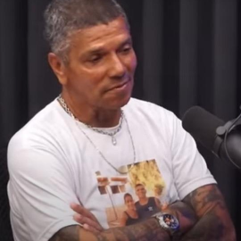
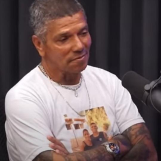

Escrito por Lívia Bombonatto
Última autualização feita em 03/05/22
• Pedrinho Matador •
maior serial killer do Brasil, Pedro Rodrigues Filho ou como era conhecido “Pedrinho Matador”, justificava que cometia os homicídios de pessoas que considerava ruins. Na ficha criminal de Pedrinho constam 70 homicídios, entretanto o serial killer contesta dizendo que já matou mais de 100 pessoas.
Natural de Santa Rita do Sapucaí, em Minas Gerais, Pedrinho nasceu com uma rachadura no crânio devido a chutes que seu pai dava na mãe durante a gravidez em brigas. O primeiro crime do serial killer aconteceu quando ele tinha 13 anos. Ele afirmou que empurrou um primo no moedor de cana e depois o picou com um facão.
Além disso, um ano depois matou o vice-prefeito de Alfenas, também em Minas Gerais, por demitir seu pai. Na época, o pai de Pedrinho trabalhava como guarda em uma escola local e foi acusado de furtar merendas destinadas aos alunos. Então, após matar o vice-prefeito, o jovem assassinou quem ele acreditava ser o verdadeiro responsável pelos furtos, sendo a próxima vítima o vigia do colégio.
Após cometer os primeiros homicídios, Pedrinho fugiu para Mogi das Cruzes, em São Paulo, ficando conhecido por roubar bocas de fumo e matar pessoas relacionadas ao tráfico. Com o tempo, ele se tornou ainda um dos líderes do tráfico da região e continuou matando os rivais no ramo.
Diante dos diversos homicídios, o serial killer ficou conhecido como Pedrinho “Matador” e só foi preso em 1973, meses depois de completar 18 anos. Ao ser preso, foi condenado a 128 anos de prisão, entretanto, no sistema penitenciário Pedrinho consumou grande parte de seus assassinatos conhecidos, inclusive na transferência inicial para o presídio em que, mesmo algemado, matou um homem condenado por estupro.
Ao chegar no complexo, os assassinatos continuaram. Segundo a revista Época em 2003, Pedrinho já matou na rua, no refeitório, na cela, no pátio e até no ‘bonde’.
Enquanto estava preso, Pedrinho justificou diversas vezes seus 47 homicídios, descrevendo as vítimas como “pessoas que não prestavam”, sendo estas estupradores e traidores, além de declarar que não aceitava “caguetes” ou “bichas”, mas afirmando que nunca matou crianças, mulheres e pais de família.
Pedrinho também tinha tatuado em seu corpo a frase “Sou capaz de matar por amor”, se referindo a ter matado o assassino de sua noiva e outras seis pessoas, deixando outras dezesseis feridas, no casamento do sujeito, e a frase “Mato por prazer”.
Segundo laudo pericial dos psiquiatras Antônio Andraus e Norberto Zoner Jr., Pedrinho seria motivado pela “afirmação violenta do próprio eu”, e que ele era acometido por “caráter paranóide e anti-socialidade”. Já a criminóloga Ilana Casoy descreveu o serial killer como um “vingador”.
Quando Pedrinho tinha 20 anos, seu pai foi cumprir pena no mesmo complexo que ele por assassinar a esposa com 21 facadas. Então, Pedrinho jurou vingança e encontrou o pai na cadeia, o matando com 22 golpes de faca e arrancou e mastigou um pedaço do coração. O assassino matou também um velho amigo, acusado de matar uma das suas irmãs, e justificou dizendo “era meu amigo, mas eu tive de matar”.
Pedrinho foi solto em 2007, mas quatro anos depois foi condenado por crimes em motim e cárcere privado, cometidos durante seu cumprimento de pena, tendo que cumprir mais 8 anos de prisão. Entretanto, ele foi liberado novamente em 2018, aos 64 anos, após cumprir 42 anos de pena.
Atualmente, Pedrinho dedica a vida para conscientizar pessoas sobre o crime. Ele tem um canal no YouTube chamado “PEDRINHO EX MATADOR OFICIAL”, onde comenta sobre crimes e assuntos variados. O serial killer também já participou de podcasts, contando sua trajetória e comentando sobre a criminalidade no Brasil.
Para a Folha de São Paulo, Pedrinho afirmou que o crime “não é brincadeira”. “Muitos estão entrando por verem os galhos, fama e dinheiro, não a raiz, prisão e morte. É como o diabo: dá com uma mão e tira com a outra. Tem muitos jovens que entram e, quando querem sair, já é tarde demais”, conta.
Em entrevista à Época, ele disse não ser possível acontecer a ressocialização de detentos. “A cadeia não recupera ninguém, amigo. O cara sai revoltado. Aprende coisa que não sabia”, afirma. Mesmo dizendo isso, ele ressalta que saiu da vida do crime e que só mataria novamente para proteger a família.
 
